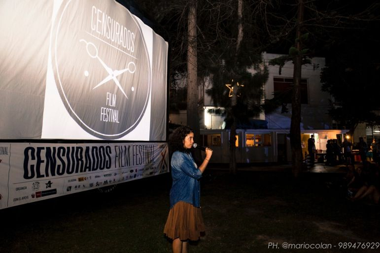

La Combi – arte rodante
Proyecto de arte, cine y educación que lleva el audiovisual a comunidades, barrios y escuelas.
Co-organizadora de Censurados Film Festival, edición tras edición.
la-combi.comCensurados es un festival de cine por la libertad de expresión: una ventana para las obras audiovisuales censuradas por motivos políticos, religiosos, sexuales, de género o medioambientales, y un espacio para el cine que la defiende.
Hoy más que nunca necesitamos recuperar espacios para promover, proteger y reivindicar la libertad creativa de las diferentes manifestaciones cinematográficas, audiovisuales y artísticas.
La censura sigue siendo una amenaza para los realizadores y artistas, así como para un público que no siempre tiene acceso a la diversidad de voces, creaciones y producciones cinematográficas y artísticas contemporáneas.
Por eso no basta con mostrar lo que fue censurado: también hay que crear desde la libertad. Defendemos el derecho de cada cineasta y cada artista a imaginar, investigar y contar sin miedo y sin autocensura, porque solo una obra hecha en libertad puede ofrecer al público una mirada propia sobre el mundo.
Defender la libertad de expresión a través del cine, de la mano de quienes trabajan por los derechos de las personas. No solo proyectamos las películas que no pueden ser vistas: apostamos por la libertad de crear y acompañamos a quienes han sido censurados.
Que ninguna obra se quede sin público por haber sido censurada, y que quienes la hacen puedan seguir creando en libertad y con seguridad.
Por eso también formamos a otros festivales y tejemos redes con ellos, como la Red de Festivales de Cine de Derechos Humanos del Abya Yala, nacida en nuestros encuentros de Arequipa.
La libertad de expresión es imprescindible para que exista una sociedad democrática. Una sociedad que no está bien informada no es plenamente libre.
Con esa idea nació Censurados Film Festival en febrero de 2014, en los jardines de Tupac, en Barranco (Lima), con pantalla al aire libre y entrada libre para todo el público.
En once ediciones, entre 2014 y 2025, el festival pasó por Lima, Arequipa, la frontera entre Guatemala y México y Tijuana, y llevó sus películas a comunidades de todo el Perú. En sus seis primeras ediciones programó más de 400 películas, que vieron cerca de 45.000 personas.
Formamos parte de la Human Rights Film Network, la red internacional de festivales de cine sobre derechos humanos, y de la Red de Festivales de Cine del Perú.
Ver las ediciones


“Toda censura es peligrosa porque detiene el desarrollo cultural de un pueblo”
Proyecto de arte, cine y educación que lleva el audiovisual a comunidades, barrios y escuelas.
Co-organizadora de Censurados Film Festival, edición tras edición.
la-combi.com
Centro cultural en Barranco (Lima), casa del festival en sus primeros años.
En los jardines de Tupac se instaló la pantalla inflable de las primeras ediciones: proyecciones al aire libre, conversatorios, exposiciones y talleres, siempre con entrada libre.
Instituciones y organizaciones que han acompañado a Censurados a lo largo de sus ediciones.